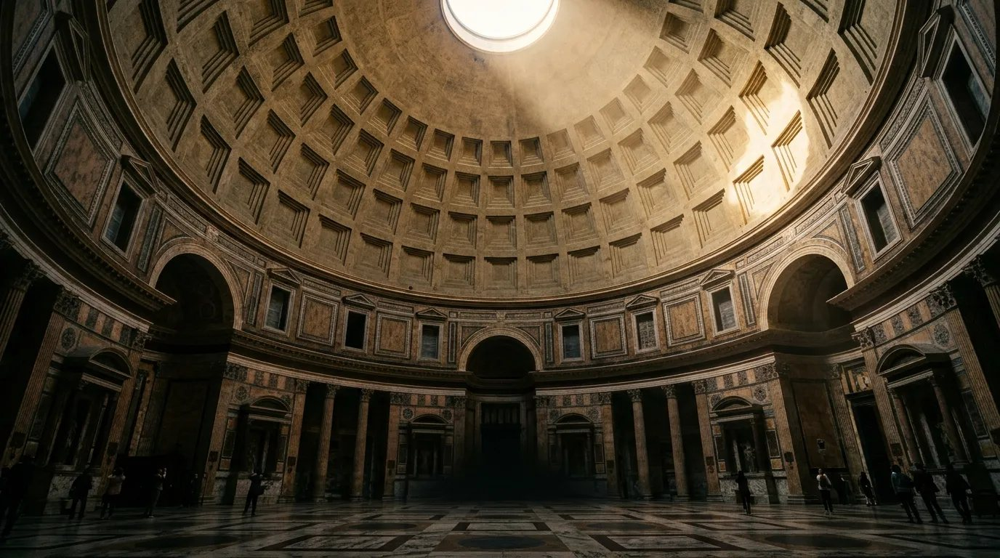
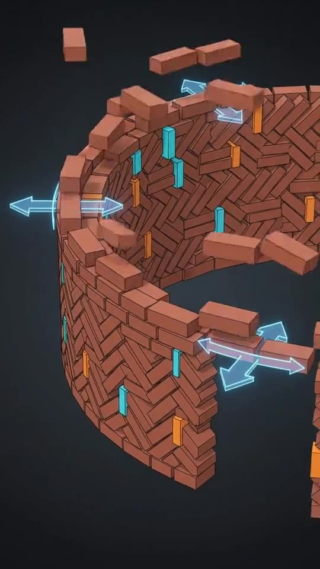
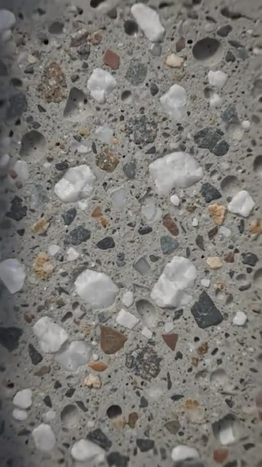

El Hormigón Romano: la Piedra Líquida que se Repara Sola
Pocos materiales han cambiado tanto la historia de la arquitectura como el opus caementicium, el hormigón romano. Gracias a él, Roma pudo construir cúpulas, bóvedas, puertos y acueductos de una escala que ninguna civilización anterior había alcanzado. Y muchas de esas obras siguen en pie, mientras estructuras de hormigón moderno necesitan reparaciones a las pocas décadas.
Una receta de cal, arena volcánica y piedra
El hormigón romano era una mezcla de cal, agua y arena, a la que se añadían fragmentos de piedra o de ladrillo, los caementa. Se vertía en moldes de madera o entre muros de ladrillo y, al fraguar, se convertía en una roca artificial con la forma que el constructor quisiera. Era barato, rápido y no exigía canteros especializados para cada bloque.
El ingrediente decisivo era la puzolana, una ceniza volcánica de la zona de Pozzuoli, junto a Nápoles. Al reaccionar con la cal, permitía que el hormigón fraguara incluso bajo el agua. El arquitecto Vitruvio lo describe en el siglo I a.C., y gracias a esa propiedad se construyeron muelles y puertos enteros en el mar, como el de Cesarea Marítima en la costa de Judea.

El misterio de las grietas que se cierran
Durante mucho tiempo se pensó que los pequeños grumos blancos de cal que aparecen en el hormigón romano eran un defecto de mezcla. Un estudio del Instituto Tecnológico de Massachusetts (MIT) publicado en 2023 propuso lo contrario: esos grumos serían el resultado de mezclar el hormigón en caliente con cal viva, y cumplirían una función.
Cuando se abre una grieta y entra el agua, los grumos de cal se disuelven y reaccionan, formando nuevos cristales de carbonato de calcio que rellenan y sellan la fisura. El material, en cierto modo, se repara a sí mismo. Los investigadores reprodujeron la técnica en laboratorio y comprobaron que las muestras agrietadas se sellaban en pocas semanas.
El Panteón, la prueba máxima
El Panteón de Roma, terminado hacia el año 125 bajo el emperador Adriano, tiene una cúpula de 43,3 metros de diámetro. Casi diecinueve siglos después, sigue siendo la mayor cúpula de hormigón sin armar del mundo. No lleva ni una barra de acero. El truco fue ir aligerando la mezcla hacia arriba: en la base se usó piedra pesada y cerca del centro, piedra pómez, mucho más ligera. Además, el espesor de la cúpula disminuye con la altura y los casetones del interior le restan peso.
En lo alto, un óculo abierto de unos ocho metros deja pasar la luz y elimina el peso de la parte más difícil de sostener. Todo el edificio es una lección de cómo hacer que el material trabaje siempre comprimido, que es donde el hormigón romano es fuerte.

Por qué importa
El hormigón romano no es mejor que el moderno: resiste menos y no lleva armadura de acero. Pero dura porque las obras se diseñaban para que trabajara comprimido y porque su química le permite curarse. Hoy, ingenieros de todo el mundo estudian estas recetas antiguas para fabricar hormigones más duraderos y con menos emisiones.
"El hormigón romano no es mejor que el moderno: dura porque trabaja siempre comprimido y porque su química le permite curarse a sí mismo."
— Memorias del Pasado
Fuentes y referencias
- Linda M. Seymour, Admir Masic et al., «Hot mixing: Mechanistic insights into the durability of ancient Roman concrete», Science Advances, 2023
- Vitruvio, De architectura, libros II y V
- Marie D. Jackson et al., estudios sobre el hormigón marino romano, American Mineralogist, 2017
Aprende más
Prueba gratis el curso Ingeniería romana →